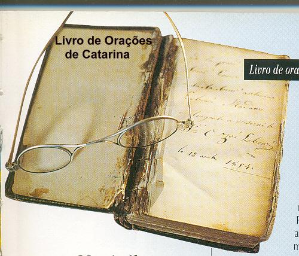
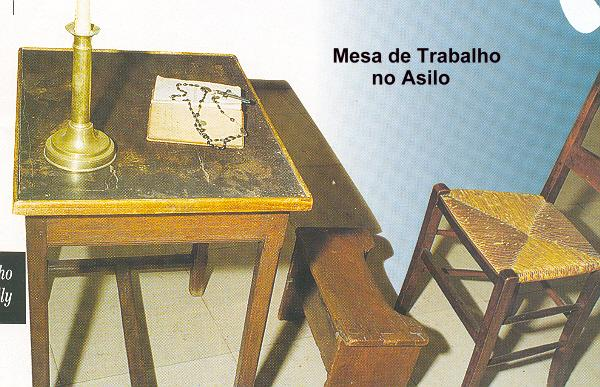
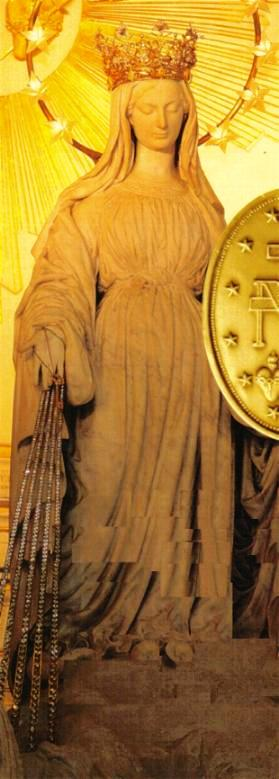
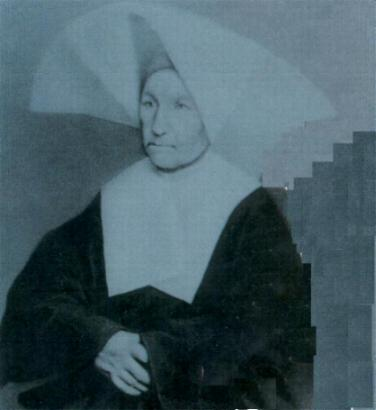

Em 19 de Julho de 1870, o Imperador
Napoleão III declarou guerra à Prússia, guerra que acabou muito mal para a França,
porque os franceses foram sucessivamente derrotados em todas as batalhas. A 18 de
Setembro os prussianos sitiaram Paris. O inverno foi muito duro e era muito grande
a quantidade de feridos e mortos, e em consequência, a fome dominou em todas as
regiões. Entretanto, mal foi assinado o tratado de paz com os prussianos e novamente
eclodiu outra guerra! Agora, uma perigosa guerra civil que incendiou a capital.
Os comunistas se declararam contra tudo o que se referia à religião.
Na tarde da Páscoa de 1871, os partidários da
Comuna invadiram a Casa de Reuilly e queriam prender a Irmã Superiora. Todas as
Irmãs se esforçaram e impediram que eles levassem a Madre. No dia seguinte, Irmã
Dufés para evitar outra tentativa de prisão, foi obrigada a fugir de Paris.
Alguns dias mais tarde, Catarina foi levada
escoltada por dois soldados a um Tribunal Revolucionário. Pediram-lhe que fosse
testemunha contra uma exaltada revolucionária conhecida por “La Valentine”. Catarina que
tinha sofrido muito nas mãos dela, não a acusou de nada, permaneceu em silêncio.
Os juízes ficaram espantados.
Mas este era o lema das Irmãs: Para uma Filha da Caridade todo ser humano deve
ser respeitado, mesmo que ele seja maldoso, ou seja, um criminoso.

Se no Asilo em Reuilly, Irmã Catarina não
teve novas Aparições da VIRGEM, todavia, permaneceu em constante comunicação
com ela. NOSSA SENHORA tinha pedido que fosse esculpida uma imagem que a
representasse segurando nas mãos o globo terrestre. Padre Aladel não pode realizar
o pedido, porque o escultor escolhido não revelou competência. Catarina que
foi convidada a olhar o trabalho classificou-o de horrível e o rejeitou. O Padre
faleceu em 1865.
Os anos passaram. Com 70 anos de idade Irmã
Catarina sentiu a morte aproximar-se. Por isso, solicitou autorização para ir a São Lázaro
encontrar-se com o Padre Chinchon que substituiu o Padre Aladel como seu confessor.
Mas justamente, por causa de sua avançada idade, lhe foi recusada a autorização
para se confessar com ele, por motivo da longa distância que teria de caminhar.
Ela pensou: “E agora o que fazer? Eu preciso atender o pedido de NOSSA SENHORA”
. Imaginou outro caminho, porque ela queria atender a
solicitação da MÃE DE DEUS. Rezou muito para NOSSA SENHORA, suplicando
que Ela lhe iluminasse e lhe apresentasse a solução para aquele caso. E assim, inspirada
pela MÃE DE DEUS, pediu uma entrevista para conversar com a Madre Superiora.
Foi marcada para o dia seguinte: “Amanhã
às 10 horas”. No encontro, que durou cerca de duas horas, as
duas Irmãs permaneceram de pé, como se fosse para uma conversa de poucos
minutos. Na verdade, a Madre Dufès como quase toda a Comunidade Religiosa, não
acreditava que Catarina tivesse recebido as visitas da VIRGEM MARIA. Aliás,
muitas delas nem duvidavam, porque consideravam que não era possível
Catarina com toda a sua ignorância, ter recebido alguma visita celeste. A simplicidade, a
total falta de instrução, o seu absoluto silêncio a respeito do assunto, a sua educação
rústica e principalmente a sua impressionante humildade, colaboravam para que
“ninguém” acreditasse na
possibilidade dela ter sido a escolhida por DEUS. E como ela "nunca falava nada a respeito do assunto", as Irmãs
da Comunidade Religiosa, em sua maioria, não acreditavam que ela fosse a escolhida do SENHOR". Por essa
razão, Irmã Catarina viu a necessidade de descrever minuciosamente as Aparições a
Irmã Joana Dufès, para que a Madre conhecesse a verdade. E então, aproveitou
o ensejo para insistir no pedido de que fosse construída com urgência, uma imagem
da VIRGEM MARIA com o globo nas mãos, na altura do peito, porque se tratava
de um pedido da MÃE DE DEUS.
consideravam que não era possível
Catarina com toda a sua ignorância, ter recebido alguma visita celeste. A simplicidade, a
total falta de instrução, o seu absoluto silêncio a respeito do assunto, a sua educação
rústica e principalmente a sua impressionante humildade, colaboravam para que
“ninguém” acreditasse na
possibilidade dela ter sido a escolhida por DEUS. E como ela "nunca falava nada a respeito do assunto", as Irmãs
da Comunidade Religiosa, em sua maioria, não acreditavam que ela fosse a escolhida do SENHOR". Por essa
razão, Irmã Catarina viu a necessidade de descrever minuciosamente as Aparições a
Irmã Joana Dufès, para que a Madre conhecesse a verdade. E então, aproveitou
o ensejo para insistir no pedido de que fosse construída com urgência, uma imagem
da VIRGEM MARIA com o globo nas mãos, na altura do peito, porque se tratava
de um pedido da MÃE DE DEUS.
Diante da segurança das palavras de Catarina
e do modo honesto e gracioso com que descreveu os fatos, Irmã Dufès teve a vontade
de lançar-se de joelhos diante dela, arrependida por tê-la tratado sempre com
dureza e pouca atenção. Mas, com sua autoridade de Superiora apenas murmurou:
“Fostes muito favorecida”!

Irmã Catarina com muita humildade, respondeu:
“Eu favorecida? Fui apenas
um instrumento minha Madre. Não foi para mim que a SANTÍSSIMA VIRGEM apareceu...
Fui escolhida, porque sendo uma ignorante, ficava evidente que eu não poderia
ter parte nas coisas maravilhosas que aconteceram e assim, todos acreditariam
que foram realizados por Ela, pela MÃE DE DEUS”.
Durante o verão (provavelmente no mês de Julho)
de 1876 o senhor Froc-Robert esculpiu a imagem pedida. Catarina não gostou,
ficou decepcionadíssima com o resultado. Mas agora, o que fazer? Decidiu
concordar com o trabalho.
No mês de Novembro a saúde da Irmã começou
a declinar, permanecia todo o tempo em seu quarto, saindo de lá raramente. Pediu a
Unção dos Enfermos e o Santo Viático. Toda a Comunidade presente rezou com ela.
No dia 31 de Dezembro de 1876, às 19 horas, Catarina morreu, sem agonia. Seu
rosto estava tranquilo e resplandecente. A Madre Superiora, Irmã Dufès, agora
convencida que a Irmã Labouré tinha recebido de fato as Mensagens do Céu e
portanto, ciente de sua santidade, comentou com as Irmãs da Comunidade:
“Sim, foi verdadeiramente ela que viu a SANTÍSSIMA
VIRGEM”.
O funeral foi um verdadeiro triunfo, para
aquela que quis permanecer desconhecida. A Comunidade quis que o corpo da Irmã
Catarina ficasse em Reuilly, num jazigo que ainda hoje existe, embaixo da
Capela. A autorização foi concedida graças à senhora Marechala de Mac-Mahon, que
era uma grande admiradora da mensageira de MARIA.
No dia 3 de Janeiro de 1877, o cortejo fúnebre,
uma longa e numerosa procissão, percorreu o estreito jardim de Reuilly. O povo e
as Irmãs rezavam e cantavam. Os cânticos fúnebres foram substituídos por
cânticos de ação de graças. Isto porque, no íntimo de cada pessoa, Catarina já
era uma Santa que viu NOSSA SENHORA e que durante 46 anos foi serva de JESUS
CRISTO nos pobres. Foi canonizada no dia 27 de Julho de 1947.

Fotografia feita três meses antes do
falecimento - 1876

Próxima Página
Página
Anterior
Retorna ao
Índice